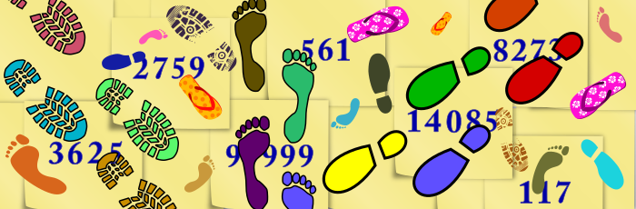
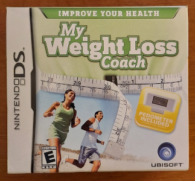
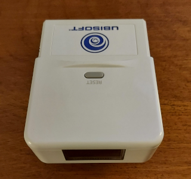
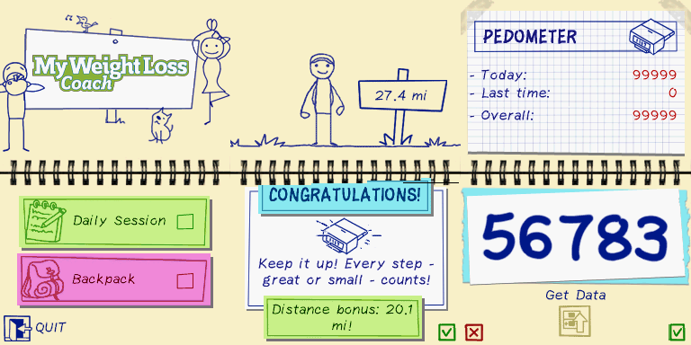
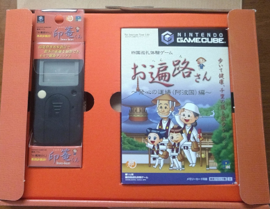
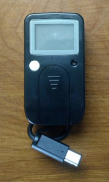
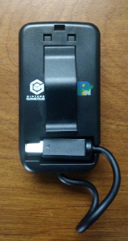
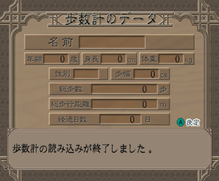
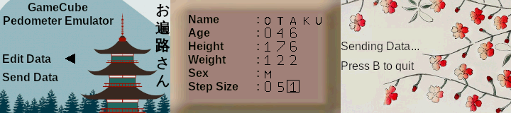

A Tale of Two Pedometers
Video games have a long history of intersecting with a wide range of activities, industries, and other media. As seen in previous Edge of Emulation articles, they've been linked to card games, collectible plastic toys and tokens, sewing machines, sonar devices, and cell phones. In each case, specialized hardware provides a new connection between the standard gaming console and whatever crazy idea comes along. Fitness and personal health are no exception and have found their way onto gaming platforms for decades, often employing large accessories that utilized lots of physical interaction. Today, staring at a screen full of flashing pixels can actually benefit the body. What a time to be alive!
While some may assume that this trend of fitness-based video games is relatively recent (circa the late 2000s), its roots go back much further than Wii Fit. One can trace "exergaming" through the likes of EyeToy: Kinetic on the PS2, Dance Dance Revolution in the 90s, the LifeCycle Entertainment Bike on the SNES, Outback Joey on the Sega Genesis with its heart-rate monitor, and even further with the Family Trainer on the Famicom. Long before Nintendo popularized the Wii Balance Board, the Joyboard hit the Atari 2600 all the way back in 1982. Although this category of gaming exploded in the past decade, it has been a consistent fixture for almost 40 years now.
One of the most common items associated with exergaming, however, is also one of the smallest and simplest: the humble pedometer. They are relatively cheap to manufacture and generally are easy to make software for. All the code needs to do is grab the number from the device and use it for whatever purposes. Reading numbers is something computers are especially good at after all. Two of these step-counters in particular caught my eye due to their uniqueness and their status as unemulated devices. The first is the rather unfortunately named "Thrustmaster" from Ubisoft. Despite sounding like something only adults are allowed to buy at certain shops, it was a pedometer designed for the Nintendo DS. It came bundled with the game My Weight Loss Coach or My Health Coach: Manage Your Weight depending on the region.
While pedometers themselves aren't necessarily the most exciting pieces of hardware to probe, it's still necessary for video game preservation. Even if the "games" themselves are basic software designed to track physical activity, there's value in making sure it can be accessed by future generations when the accessories eventually fail. Although these pedometers have been made obselete today by smartphone apps and smartwatches, they offer a glimpse at the growing digitization of exercising and early gamification techniques used to motivate people to get more active. For that reason alone, these devices are historically significant and should not be forgotten.
Maximum Thrust
Every copy of My Weight Loss Coach comes packaged with a Thurstmaster pedometer. The Slot-2 accessory is fairly large, and as such the game sports a bigger than normal box, something of a rarity for non-Japanese DS games. A lot of Slot-2 add-ons for the system were never released in other countries. Inverting this trend, however, the Thrustmaster only sold in North America and Europe. The hardware itself resembles an oversized game cartridge with a bulkly rectangular end. It has an LCD screen that displays 5 digits for the current number of steps and a physical button to reset that count. The Thrustmaster takes a single CR2032 battery that must be inserted from a side slot. It also features a belt clip, although it's hard to imagine anyone lugging this massive piece of plastic around their hips. Out of all the pedometers I've observed, this one is probably the least well designed. It's difficult to fit into pockets and somewhat awkward to carry in general.
A brand-new completely sealed version of the game set me back an astounding $6.35 USD back at the start of 2020. With rising inflation, in today's money I would have paid an astronomical $6.84! Needless to say, My Weight Loss Coach isn't exactly a hot collector's item, and it was relatively easy to get ahold of before the Covid-19 pandemic broke out internationally. NDS emulation was constantly improving in GBE+, and I felt confident that I could start work on supporting Slot-2 accessories. Well before I begin investigating the Sega Card Reader, I set my sights on the Thrustmaster. The hardware itself seemed relatively straightforward to reverse-engineer. It offered a nice introduction to Slot-2 emulation and would eventually help me set up a framework for dealing with other items such as the DS Rumble Pak and the Magic Reader.
 
Only a small handful of western NDS software came in large boxes like this. It needs all that space for the hefty Thrustmaster included inside.
The software is nothing more than a digital log of how much you walk and when. It features a generic and goofy little "stick character" to help users navigate menus, create an exercise regimen, and balance their diets. This guy talks way too much when first booting up the game, but thankfully he eventually shuts up (a little) the more people use My Weight Loss Coach. One of the main features is the ability to upload steps from the Thrustmaster into the the software. Although this function is what makes My Weight Loss Coach stand out among NDS titles, it's also entirely optional. Users can manually input steps they've taken, convenient if they want to workout with a different, more comfortable pedometer. While this method is dependant on users being truthful, who cheats at health-based video games anyway?
Digressing, the first task in figuring out the Thrustmaster is to determine how the NDS detects the Slot-2 device. This phase is standard to all Slot-2 hardware. Essentially, the software reads certain values mapped to the GBA cartridge space and expects specifc bytes to be returned. Every Slot-2 device is different, so games can decide whether or not a given accessory is present. This was my first experience dealing with this sort of device detection. While documents like GBATEK mention device detection of Slot-2 hardware like the Rumble Pak, I had no idea it was widespread and applicable to other hardware across the NDS. At any rate, it was fairly easy to make a quick homebrew ROM that displayed the data My Weight Loss Coach was looking for. The Thrustmaster's device detection values can be described as the following psuedo-code:
IF ADDRESS AND 1 THEN:
RETURN 0xF7
ELSE:
RETURN 0xF0 OR ((ADDRESS AND 0x1F) SHIFT RIGHT 1)
After instructing GBE+ to return those values when reading from certain areas of the GBA cartridge space, My Weight Loss Coach recognized that a Thrustmaster was now attached. Emulating this much allowed me to access the menu where steps are uploaded from the pedometer to the NDS. Selecting that option, however, gave me a message that I'd taken a grand total of zero steps, which made sense given the peripheral wasn't fully supported yet. During this time, however, I was able to observe any reads and writes My Weight Loss Coach issued to any Slot-2 memory address. This revealed that the game only reads 5 bytes, in the 0xA000000::0xA000004 range. Since these were the only inputs it was looking for, they must have directly controlled the number of steps the game read.
As it turns out, each of the 5 bytes accounts for a single digit displayed on the pedometer's LCD screen. The first byte at 0xA000000 determines the "ONES" value, 0xA000001 determines the "TENS" value, 0xA000002 determines the "HUNDREDS" value, and so on and so forth. The Thrustmaster is only capable of recording 99999 steps, as that's the most is can show. It won't go any higher, nor will it roll over. For some reason, these values need to be read a total of 4 times to get the correct numbers, and there needs to be some sort of delay between reads as well. I logged the additional reads, but thought nothing of them until I tried making my own homebrew software to use the pedometer. Reading the values just once returned invalid results.
The last bit of mystery to the Thrustmaster was the way it reset the step counter. After steps are uploaded, the Thrustmaster's step count returns to 00000. I tried simply writing zeroes to the memory locations that stored the digits, but that had no effect whatsoever. Digging through my logs of all reads and writes to the Slot-2 device, I saw that My Weight Loss Coach read from an address I hadn't seen before, 0xA00000C. Testing it out via homebrew, I found out that merely reading that address causes the counter to reset. While it may seem unintuitive to wipe data just by reading something, it probably makes sense from an engineering standpoint. The Thrustmaster is basically a read-only device, thus simplifying the overall design of the hardware.

The Thrustmaster is not a complicated device and was easily emulated.
I made a menu where players can select the amount of steps taken on a virtual pedometer. That value is then converted into 5 separate bytes that My Weight Loss Coach eventually checks. The value is also erased whenever 0xA00000C is accessed. And that's all it took to emulate the Ubisoft Thrustmaster. It's not a complicated device, and it helped get me familiar with Slot-2 peripherals. Otherwise, there isn't much to say about it. As far as pedometers go, it's one of the simplest I've encountered. No frills, no excitingly weird features. It's even rather boring in contrast to some of the other things that were done on the NDS. But preserving video game history demands each and every piece be examined and documented, no matter how mundane.
Road to Redemption
Let's move onto something less uplifting. It's time for an honest story about failure. A couple of years ago, I mentioned that I wanted to expand my efforts beyond just odd or unusual Game Boy hardware. I wasn't talking about moving on to NDS add-ons, nor was I referrencing my latest work with the Pokemon Mini. Instead, I had planned on helping out with GameCube emulation. Dolphin, the GameCube and Wii emulator, is a truly amazing piece of software, and it stands as a testament to open-source development and community contributions. Over the years, Dolphin has become a well polished project that constantly improves itself. Seeing games in HD rekindled my love for emulation after growing apart from it during high-school. By 2012, I'd joined the Dolphin Forums and started learning about the technical ins and outs of the emulator so I could help other newbies. I did make mistakes, but experienced developers like neobrain often corrected me. This inspired me to learn how to make emulators so I'd be more competent and knowledgeable. One thing led to another, and now I'm digitally dissecting sewing machines and sonars.
I owe Dolphin a lot, so as an emudev, I wanted to return the favor. As these Edge of Emulation articles have made clear, my specialty lies in emulating the unemulated, dealing with previously unsupported and undocumented hardware. While Dolphin covers a ton of GameCube and Wii peripherals, there are some corner cases that it does not touch at all. In 2018, I decided to check out an item missing from that emulator: a small black pedometer that plugs into one of the GameCube's controller ports. I happened across the device relatively cheaply on eBay that summer, and when winter came around, I had time to study it in some detail.
Now, the GameCube isn't completely out of my domain. I did work briefly on the Gekko GC emulator many, many moons ago, but that amounted to nothing more than adding USB controller support and rumble, not major stuff like revamping the dynarec or handling shaders. I was not very familiar with much of the system or how its various parts fit together. Still, I pressed on, looked up documentation on how data was sent via the GameCube's controllers. After some trial and error, and I managed to get a fair amount of the pedometer working in Dolphin. My efforts, however, were at best premature when I decided to open a Pull Request on Dolphin's GitHub page.
Although I had attempted to make some Wii homebrew capable of probing this pedometer, it was quite a mess and delivered incomplete and inaccurate results. The Dolphin developer Techjar noticed several glaring discrepencies between what the WIP code was supposed to do versus what it actually did, namely how the step counters were handled and such. Despite having tested a quickly hacked together version of the code before I made the Pull Request, the current implementation was wrong. The preliminary documentation I'd cobbled together was wrong. On top of it all, what research I had done was tainted by my poorly written homebrew. In short, the work I did was trash and not up to the standards I typically set for myself. I felt that properly emulating the pedometer was beyond me, especially since I didn't know my way around Dolphin's codebase enough to create the necessary menus or config files. Even if I could rectify all of the above problems, I simply lacked the confidence at that point to continue and withdrew the Pull Request.
Obviously I made progress on many other accessories, conquering other unknown devices. But that GameCube pedometer was always stuck in the back of my head, haunting me. Every time I glanced at it sitting on my shelf, I'd fall into momentary bouts of imposter syndrome. I don't always figure out how hardware works right away. Sometimes it's months later, sometimes it's next year. However this was different; it felt like I'd utterly failed on multiple fronts. It made me question if knew what I was doing, even as I successfully reverse-engineered more and more items. Was I some kinda two-bit hack who got just lucky tackling low-hanging fruit? Was I even qualified to be doing this sort of programming in the first place? What if the GameCube pedometer was proof that I was a faker who only got popular by writing a couple of flashy articles here and there? What business did a pretender like myself have thinking I could add anything useful to an awesome emulator like Dolphin, something made by real emudevs?
It isn't easy to admit these doubts, as silly and irrational as they may seem. For the longest time I denied even having them, but that didn't stop me from actually having them. Just writing about them like this was surprisingly emotional for me. Documenting and emulating exotic hardware has become a large part of my identity over the past few years, and I have a lot of self-worth invested in it. Those feelings of inadequacy hit deep. I walked away from that GameCube pedometer for 2 whole years, not quite sure I could ever get it right. Still, I returned to my research back last February. The only way to move forward is to press on. I had to face this challenge again, hopefully as a little older and wiser emudev. I needed that peace of mind, but more than anything, I felt as if I had to redeem myself.
Back in Step
In 2003, a company called PIN Change released a game called Ohenro-San: Hosshin no Dojo for the GameCube. It offered a virtual Shikoku Pilgrimage, allowing people to visit several shrines from the comfort of their living rooms. Ohenro-San displays photographs of the paths that zoom in and change as players make their journey. It's quite similar to a slow motion version of Google's Street View, except much more spiritually enlightening. Bundled with some copies of the disc were a walking pad and a pedometer. The pad plugged into the GameCube controllers ports and moved players along their route. Without the pad, a regular GameCube controller can be used by pressing the A and B buttons. Alternatively, players could use the pedometer while walking around outside to record steps; later they could transfer those steps into the game, advancing the pilgrimage by the amount traveled in real-life.
The pedometer, called the Inrou-Kun (印篭くん) attaches to the 4th controller port, and from there Ohenro-San can read and write data. During the initial setup, players create a profile of themselves, complete with their name, age, gender, height, and average step length (used to calculate travel distance when walking). What makes the Inrou-Kun interesting is that all of these entries are stored inside the pedometer; it doesn't just count steps! This type of behavior is typically demonstrated by later, more advanced pedometers, such as the Activity Meter on the NDS. Furthermore, the Inrou-Kun holds up to 8 days worth of step counts and kilocalories (kcals) burned for each period. Last but not least, it has a digital clock for time keeping and can determine which shrines you've visited based on your current distance.
  
Compared to previous Nintendo home consoles, the GameCube received less attention regarding unique accessories, making the Inrou-Kun a real treat.
So, how does one go about reverse-engineering something like the Inrou-Kun? Most if not all devices that connect to the GameCube's controller port use a particular protocol called JoyBus. It dates all the way back to the N64 and continued through the Wii (where certain games supported GameCube controllers as input). The JoyBus protocol is commonly associated with the GBA-to-GCN connection feature. In fact, the Game Boy Advance natively supports limited JoyBus communication for this very purpose. Since the Inrou-Kun uses JoyBus to talk to the GameCube, it should follow easy to predict patterns such as when it sends specific commands and what data is being transferred. While various JoyBus devices use different commands, they all share a common one, INFO as it's called.
The purpose of this command is to simply return a special 16-bit ID for that device. It's generally one the very earliest commands sent via JoyBus so the software can detect if the correct hardware is attached, especially for accessories and such. In the case of Ohenro-San, it sent the INFO command to the 4th controller port as expected. Dolphin's powerful debugging tools helped verify this, so the next step was to write some homebrew software that sends this same command and logs the response. I'd previously done this back in 2018, and it was just about the only thing I managed to get correct at the time. Unfortunately, using DevKitPro in conjunction with the JoyBus protocol was a bit more troublesome than I expected. At any rate, the code at hand was enough to grab the 16-bit ID, which was 0x0802.
If a JoyBus device responds with that value, the game will recognize it as an Inrou-Kun. Afterwards, the software begins sending more commands whenever access to the pedometer is required. An option on the main screen of Ohenro-San checks and displays most of the data stored on the Inrou-Kun. Although this mode is read-only, it helpfully allowed me to see what commands were necessary to retrieve information from the pedometer. Using Dolphin again, I noted that only 2 commands were transmitted at that time, 0x40 followed by 0x60. By spoofing different responses to these commands (i.e. hacking Dolphin), I got the emulator to act as if the Inrou-Kun were connected. Eventually, I figured out that the second command transferred data from the pedometer to the GameCube, and the first command... did something else. At this point, my research hit a brick wall. I couldn't get my Wii homebrew to send these same commands, nor could I examine what the proper return values really were. As a result, I never had a truly complete idea of how the Inrou-Kun worked.

This is as far as I got back in 2018. I could force Dolphin to fill in certain fields when reading an emulated pedometer, but I was missing several key details regarding its operation.
Fast-forward years later, and I began thinking of new approaches to this problem. I remembered hearing that the GBA - in conjunction with the GBA-to-GCN cable (DOL-011) and some homebrew software - was capable of mimicking a GameCube controller. The GameCube controller is also a JoyBus device, just like the Inrou-Kun. What if I edited that homebrew so that it functioned like the pedometer instead of a controller? I was much more comfortable working with GBA hardware and software after all. If I could get a GBA working well enough to fool Ohenro-San into thinking it was a real pedometer, that would mean I had a pretty good understanding of the Inrou-Kun. Essentially, I was going to reverse-engineer the device by making a GBA replacement. If my GBA homebrew failed to work with Ohenro-San, I could easily make adjustments and narrow down the expected behavior.
I decided to use Extrems' Corner's GBA-as-controller project as a base for my Inrou-Kun emulator. By making a quick few alterations, I was able to get my GBA to pass the ID check and receive the mysterious 0x40 command, followed by the DATA TRANSFER command. Initially, I kept the GBA unresponsive to both commands. Ohenro-San didn't seem to care about the first one, but the software froze if the GBA sent no data for the second. Once I started properly responding to the DATA TRANSFER command, however, the game accepted the GBA as if it were the Inrou-Kun and displayed results such as the player's registered name. By continually changing the bytes from the GBA and recording the results, I came up with a definitive list what kind of data the pedometer is supposed to send. It largely matched my previous documentation but with a number of critical corrections.
One Last Step
To review, my GBA running homebrew software tricked the GameCube into thinking it was a pedometer. When the GameCube requested information from the pedometer, the GBA provided it. This emulated one major function of the Inrou-Kun, but another remained. Writing data to the pedometer was still a completely unknown process. After setting up a player profile for the first time, Ohenro-San will store that information on the pedometer. This isn't necessarily essential for the homebrew, as it can more or less safely ignore whatever the GameCube sends, but knowing this is important in order to fully document how the Inrou-Kun operates. I set up my homebrew ROM on the GBA to monitor all incoming commands at that time so I could see what exactly the GameCube was trying to send. It issued another DATA TRANSFER command, however, the format was different now. Previously when reading data from the pedometer, it sent the following 80 bytes:
60 FF FF FF FF FF FF 00 00 00 00 00 00 00 00 00
00 00 00 00 00 00 00 00 00 00 00 00 00 00 00 00
00 00 00 00 00 00 00 00 00 00 00 00 00 00 00 00
00 00 00 00 00 00 00 00 00 00 00 00 00 00 00 00
00 00 00 00 00 00 00 00 00 00 00 00 00 00 00 00
00 00 00 00 00 00 00 00 00 00 00 00 00 00 06 5A
However, writing data to the pedometer completely changed the incoming data. It varied depending on what information I had entered for my name and other stats, but the new 80 bytes generally looked like this particular sample:
60 01 00 00 00 00 00 46 96 2D 01 32 00 00 00 00
00 00 00 00 00 00 00 02 0D 29 00 00 00 00 00 00
00 00 00 00 00 00 00 00 00 00 00 00 00 00 00 00
00 00 00 00 00 00 00 00 00 00 00 00 00 00 00 00
00 00 00 00 00 00 00 00 00 00 00 00 00 00 00 00
00 00 00 00 00 00 00 00 00 00 00 00 00 00 01 D5
At first glance, the data appears cryptic and inscrutable. By playing around with the entry fields, such as changing the name, I eventually figured out what each of these bytes represented. Byte 0 is part of the JoyBus protocol, the Command Byte 0x60. The following Bytes 1 through 6 belong to the player's Name. Bytes 7, 8, and 9 indicate the player's Age, Height, and Weight. Bytes 10 and 11 store the player's Sex and Length of Step. Bytes 23, 24, and 25 set the pedometer's Hours, Minutes, and Seconds values used for its internal clock. The GameCube pings its own RTC and transfers the current time. Interestingly enough, when reading data from the pedometer, it never returns anything from its clock. Finally, at the very end of the packet lies a 16-bit checksum. It's quite rudimetary; just add up the first 78 bytes, nothing fancier than that.
The format for writing data to the pedometer was fairly straightforward to understand, yet another question stood out in my mind. How did the pedometer know when the DATA TRANSFER command wanted to read or write data? Whenever it reads data, it sends the same packet, over and over again. The Name field consists of 0xFF bytes. I theorized that the pedometer looked at this pattern as a sort of psuedo-command. Perhaps it behaved in a manner like "If the Name is FF FF FF FF FF FF, read data back to the GameCube. Otherwise, write data to the pedometer." It seemed to fit the evidence I had at hand, but I didn't want to make assumptions. I had to find a way to test it on real hardware. To do so though, I needed to have Wii homebrew capable of communicating with the pedometer. As I mentioned before, my previous attempts at creating such a program did not go well.
Nevertheless, I tried once more. The only way to succeed is to actually make an effort. If you can't even do that, you'll only ever know failure. Back in 2018, I used DevKitPro's libogc. Specifically, I thought it best to take advantage of its SI_Transfer() function to send commands and receive data via the Serial Interface, the low-level GC/Wii components responsible for handling the JoyBus protocol. For whatever reason, I never was able to use it correctly. I turned to a different approach instead and decided to do things manually. Brushing up on some documention about the Serial Interface, I got a pretty good idea of how the MMIO registers worked. To be brief, all I had to do was write data to an input buffer, configure SICOMCSR appropiately to start a transfer (setting the port number and lengths of input sent and output received), wait for the transfer to complete, then read data to an output buffer.
This method worked flawlessly the first time I tested it. Afterwards, I assembled a proper homebrew program that examined the pedometer's DATA TRANSFER command. My initial theory proved correct. When the GC/Wii sends FF FF FF FF FF FF as the Name field, it functions as a psuedo-command. I called it the "Ping Pattern" because that specific combination of bytes causes the pedometer to respond with all of its internal data. If GC/Wii sends something that does not match the "Ping Pattern", the pedometer then overwrites its internal data with whatever the GC/Wii transmits. It seems a rather curious way of separating read/write operations, but it is simple and effective to understand. It also reduces the number of JoyBus commands that need to be handled.
Speaking of JoyBus commands, the only thing left that puzzled me was the mysterious 0x40 command. Normally, this command is called a "Short Poll" when used for GameCube controllers, but its purpose was totally different for the pedometer. Instead, it acts more like a signal from the GC/Wii, informing the pedometer that the host is ready to initiate a DATA TRANSFER. If this command is not sent, the pedometer becomes unable to handle any data sent or requested. The GC/Wii's SISR register will indicate transfer errors for either "Data Collision" or "No Response". Interestingly enough, the pedometer doesn't actually respond with any data for this command, so it's pretty much fire and forget for the GC/Wii.
Hardware Emulating Hardware
With that last command taken care of, the inner workings of the Inrou-Kun were more or less fully documented. However, I wasn't satisfied with just writing down a few notes about the device. I came into this task with the goal of emulating the GameCube's one and only pedometer. I still felt intimidated by Dolphin's codebase. I can make a few quick and dirty changes for proof-of-concepts, but maybe I'm not cut out for making more extensive contributions just yet, especially GUI related stuff. Even so, it's possible to preserve the Inrou-Kun using the GBA. I had already demonstrated that the GBA could trick the GC/Wii into thinking it was the pedometer to monitor the data transfers. Now, knowing all of the commands, it was possible to make homebrew that fully replicated the pedometer in every aspect.
As a result, I came up with the GC Pedometer Emulator. This ROM turns any GBA with a GBA-to-GCN cable into a working Inrou-Kun. The interface could use a bit of work, but it's serviceable for those wishing to play around with a rather novel piece of GameCube history. It's a rare example of using one piece of officially licensed hardware to emulate another piece of officially licensed hardware. Not all emulation happens on PCs, FPGAs, or Android products. This wouldn't have been possible without Extrems' Corner and their impeccable work released as open-source software. Naturally the source code of the GC Pedometer Emulator is similarly licensed under the 2-Clause BSD.

It may be a bit basic, but this bit of homebrew can stand-in for the Inrou-Kun.
With this, I can finally put to rest something that bothered me for years. I no longer look back at the Inrou-Kun with mixed feelings of personal disappointment or shame. I've stopped thinking of myself as an "imposter" and learned to see setbacks as temporary obstacles rather than permanent marks of inadequacy. The pedometer certainly wasn't the most complex or difficult items I've looked at, but it certainly had an outsize impact on my life. At last revealing the secrets of this little device was a big deal for me. On that note, all of my research findings concerning the Inrou-Kun have been posted on GitHub. To any interested Dolphin developers, or anyone else looking for a challenge, I would invite you to complete what I started by adding support in the emulator. This time the information's good; I guarantee it.
Your GBA can now become a pedometer! Click the images to enlarge.
Ultimately, both Ohenro-San and the Inrou-Kun have been misunderstood by westerners. The very idea behind it has been mocked on a handful of forums and blogs. For some, the software and the device are simply inconceivable, dumb, and borderline useless. This probably stems from a broader attitude in the west that tends to negatively view anything non-gaming related that happens to run on a gaming console. At its core, Ohenro-San really is a "walking simulator" with a few religous and historical quizzes thrown into the mix. However, it served a niche but valid market: devote elderly individuals who couldn't make the real pilgrimage due to travel or health issues. They could safely imitate the journey from their own homes or towns at their own pace. The GameCube, an easy to use console typically hooked up to a large and bright display, provided an ideal platform at the time. Today, this very same idea of a virtual pilgrimage survives through the use of smartphone apps that track how far the user walks. Despite Ohenro-San's detractors overseas, it has an important place among video game history, showing the electronic evolution of a centuries old Japanese tradition.
The Lost Last Year
It's been a long time since I last made one of these articles. 2021 saw only one them published. If things had gone according to plan, I'd have released 4 in total last year, and this one here should have been the 2nd of 2022. Plans have a weird way of changing though, and in general ain't nothing been normal about the past couple of years. There's been a ton of previously unemulated stuff that's now openly emulated in GBE+, but I've been busy with another project that makes writing these articles difficult. Thankfully that's more finished than unfinished, so I can dedicate a bit of myself to pumping out this kind of bathroom reading material again. The project is definitely related to emulation and video games, but I'd rather not let loose anymore details until the final phases start taking shape.
So what's next here? What's on the horizon for the Edge of Emulation? Expect to see a lot of odds and ends thoroughly examined. A so-called "Smartwatch" for the GBA. Legit flashcarts officially licensed by Nintendo. A GBA cartridge capable of playing movies. And after a notable hiatus, Mobile Adapter GB - Part 2, featuring guns, bombs, marriage, and Hello Kitty. Yup, it's gonna be one of those years.
{kind=link}
{kind=link}